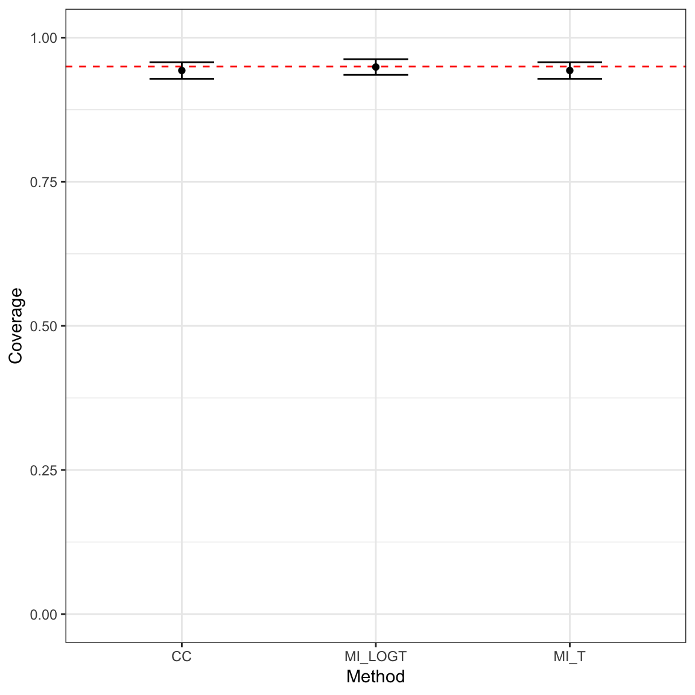
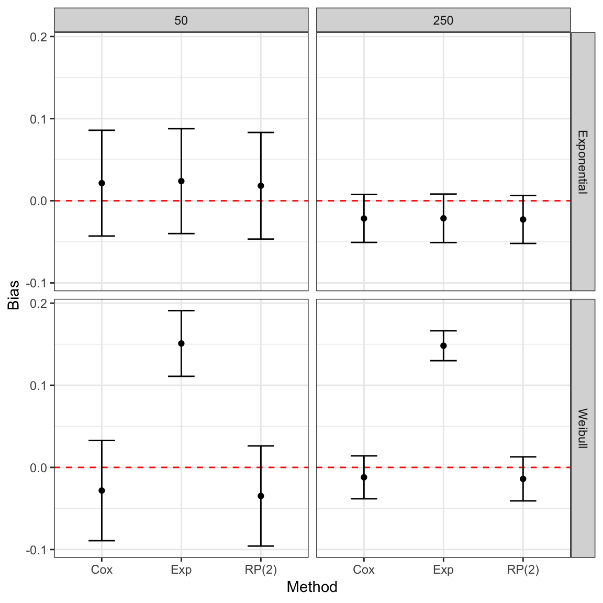

Introduction to rsimsum
Alessandro Gasparini
2018-12-20
Source:vignettes/introduction.Rmd
introduction.Rmdrsimsum
rsimsum is an R package that can compute summary statistics from simulation studies. It is a port to R of the user-written command simsum in Stata (White I.R., 2010).
The aim of rsimsum is helping reporting of simulation studies, including understanding the role of chance in results of simulation studies. Specifically, rsimsum can compute Monte Carlo standard errors of summary statistics, defined as the standard deviation of the estimated summary statistic.
Formula for summary statistics and Monte Carlo standard errors are presented in the next section.
Notation
We will use th following notation throughout this vignette:
- \(\theta\): an estimand, and its true value
- \(n_{\text{sim}}\): number of simulations
- \(i = 1, \dots, n_{\text{sim}}\): indexes a given simulation
- \(\hat{\theta}_i\): the estimated value of \(\theta\) for the \(i^{\text{th}}\) replication
- \(\widehat{\text{Var}}(\hat{\theta}_i)\): the estimated variance \(\text{Var}(\hat{\theta}_i)\) of \(\hat{\theta}_i\) for the \(i^{\text{th}}\) replication
- \(\text{Var}(\hat{\theta})\): the empirical variance of \(\hat{\theta}\)
- \(\alpha\): the nominal significance level
Summary statistics
The first summary statistic of interest is bias, which quantifies whether the estimator targets the true value \(\theta\) on average. Bias is calculated as:
\[\text{Bias} = \frac{1}{n_{\text{sim}}} \sum_{i = 1} ^ {n_{\text{sim}}} \hat{\theta}_i - \theta\]
The Monte Carlo standard error of bias is calculated as:
\[\text{MCSE(Bias)} = \sqrt{\frac{\frac{1}{n_{\text{sim}} - 1} \sum_{i = 1} ^ {n_{\text{sim}}} (\hat{\theta}_i - \bar{\theta}) ^ 2}{n_{\text{sim}}}}\]
The empirical standard error of \(\theta\) depends only on \(\hat{\theta}\) and does not require any knowledge of \(\theta\). It estimates the standard deviation of \(\hat{\theta}\) over the \(n_{\text{sim}}\) replications:
\[\text{Empirical SE} = \sqrt{\frac{1}{n_{\text{sim}} - 1} \sum_{i = 1} ^ {n_{\text{sim}}} (\hat{\theta}_i - \bar{\theta}) ^ 2}\]
The Monte Carlo standard error is calculated as:
\[\text{MCSE(Emp. SE)} = \frac{\text{Emp. SE}}{\sqrt{2 (n_{\text{sim}} - 1)}}\]
When comparing different methods, the relative precision of a given method B against a reference method A is computed as:
\[\text{Relative % increase in precision} = \left( \frac{\text{Emp. SE}_A}{\text{Emp. SE}_B} \right) ^ 2\]
Its (approximated) Monte Carlo standard error is:
\[\text{MCSE(Relative % increase in precision)} \simeq 2 \frac{\text{Var}(\hat{\theta}_A)}{\text{Var}(\hat{\theta}_B)} \sqrt{\frac{1 - \rho^2_{AB}}{n_{\text{sim}} - 1}}\]
\(\rho^2_{AB}\) is the correlation of \(\hat{\theta}_A\) and \(\hat{\theta}_B\).
A measure that takes into account both precision and accuracy of a method is the mean squared error, which is the sum of the squared bias and variance of \(\hat{\theta}\):
\[\text{MSE} = \frac{1}{n_{\text{sim}}} = \sum_{i = 1} ^ {n_{\text{sim}}} (\hat{\theta}_i - \theta) ^ 2\]
The Monte Carlo standard error is:
\[\text{MCSE(MSE)} = \sqrt{\frac{\sum_{i = 1} ^ {n_{\text{sim}}} \left[ (\hat{\theta}_i - \theta) ^2 - \text{MSE} \right] ^ 2}{n_{\text{sim}} (n_{\text{sim}} - 1)}}\]
The model based standard error is computed by averaging the estimated standard errors for each replication:
\[\text{Model SE} = \sqrt{\frac{1}{n_{\text{sim}}} \sum_{i = 1} ^ {n_{\text{sim}}} \widehat{\text{Var}}(\hat{\theta}_i))}\]
Its (approximated) Monte Carlo standard error is computed as:
\[\text{MCSE(Model SE)} \simeq \sqrt{\frac{\text{Var}[\widehat{\text{Var}}(\hat{\theta}_i)]}{4 n_{\text{sim}} \widehat{\text{Model SE}}}}\]
The model standard error targets the empirical standard error. Hence, the relative error in the model standard error is an informative performance measure:
\[\text{Relative % error in model SE} = 100 \left( \frac{\text{Model SE}}{\text{Empirical SE}} - 1\right)\]
Its Monte Carlo standard error is computed as:
\[\text{MCSE(Relative % error in model SE)} = 100 \left( \frac{\text{Model SE}}{\text{Empirical SE}} \right) \sqrt{\frac{\text{Var}[\widehat{\text{Var}}(\hat{\theta}_i)]}{4 n_{\text{sim}} \widehat{\text{Model SE}} ^ 4} + \frac{1}{2(n_{\text{sim}} - 1)}}\]
Coverage is another key property of an estimator. It is defined as the probability that a confidence interval contains the true value \(\theta\), and computed as:
\[\text{Coverage} = \frac{1}{n_{\text{sim}}} \sum_{i = 1} ^ {n_{\text{sim}}} I(\hat{\theta}_{i, \text{low}} \le \theta \le \hat{\theta}_{i, \text{upp}})\]
where \(I(\cdot)\) is the indicator function. The Monte Carlo standard error is computed as:
\[\text{MCSE(Coverage)} = \sqrt{\frac{\text{Coverage} \times (1 - \text{Coverage})}{n_{\text{sim}}}}\]
Under coverage is to be expected if:
- \(\text{Bias} \ne 0\), or
- \(\text{Models SE} < \text{Empirical SE}\), or
- the distribution of \(\hat{\theta}\) is not normal and intervals have been constructed assuming normality, or
- \(\widehat{\text{Var}}(\hat{\theta}_i)\) is too variable
Over coverage occurs as a result of \(\text{Models SE} > \text{Empirical SE}\).
As under coverage may be a result of bias, another useful summary statistic is bias corrected coverage:
\[\text{Bias corrected coverage} = \frac{1}{n_{\text{sim}}} \sum_{i = 1} ^ {n_{\text{sim}}} I(\hat{\theta}_{i, \text{low}} \le \bar{\theta} \le \hat{\theta}_{i, \text{upp}}) \]
The Monte Carlo standard error is analogously as coverage:
\[\text{MCSE(Bias corrected coverage)} = \sqrt{\frac{\text{Bias corrected coverage} \times (1 - \text{Bias corrected coverage})}{n_{\text{sim}}}}\]
Finally, power of a significance test at the \(\alpha\) level is defined as:
\[\text{Power} = \frac{1}{n_{\text{sim}}} \sum_{i = 1} ^ {n_{\text{sim}}} I \left[ |\hat{\theta}_i| \ge z_{\alpha/2} * \sqrt{\widehat{\text{Var}}(\hat{\theta_i})} \right]\]
The Monte Carlo standard error is analogously as coverage:
\[\text{MCSE(Power)} = \sqrt{\frac{\text{Power} \times (1 - \text{Power})}{n_{\text{sim}}}}\]
Further information on summary statistics for simulation studies can be found in White (2010) and Morris, White, and Crowther (2017).
Example 1: Simulation study on missing data
With this example dataset included in rsimsum we aim to summarise a simulation study comparing different ways to handle missing covariates when fitting a Cox model (White and Royston, 2009). One thousand datasets were simulated, each containing normally distributed covariates \(x\) and \(z\) and time-to-event outcome. Both covariates has \(20\%\) of their values deleted independently of all other variables so the data became missing completely at random (Little and Rubin, 2002). Each simulated dataset was analysed in three ways. A Cox model was fit to the complete cases (CC). Then two methods of multiple imputation using chained equations (van Buuren, Boshuizen, and Knook, 1999) were used. The MI_LOGT method multiply imputes the missing values of \(x\) and \(z\) with the outcome included as \(\log(t)\) and \(d\), where \(t\) is the survival time and \(d\) is the event indicator. The MI_T method is the same except that \(\log(t)\) is replaced by \(t\) in the imputation model.
We load the data in the usual way:
Let’s have a look at the first 10 rows of the dataset:
head(MIsim, n = 10)
#> # A tibble: 10 x 4
#> dataset method b se
#> <dbl> <chr> <dbl> <dbl>
#> 1 1 CC 0.707 0.147
#> 2 1 MI_T 0.684 0.126
#> 3 1 MI_LOGT 0.712 0.141
#> 4 2 CC 0.349 0.160
#> 5 2 MI_T 0.406 0.141
#> 6 2 MI_LOGT 0.429 0.136
#> 7 3 CC 0.650 0.152
#> 8 3 MI_T 0.503 0.130
#> 9 3 MI_LOGT 0.560 0.117
#> 10 4 CC 0.432 0.126The included variables are:
str(MIsim)
#> Classes 'tbl_df', 'tbl' and 'data.frame': 3000 obs. of 4 variables:
#> $ dataset: num 1 1 1 2 2 2 3 3 3 4 ...
#> $ method : chr "CC" "MI_T" "MI_LOGT" "CC" ...
#> $ b : num 0.707 0.684 0.712 0.349 0.406 ...
#> $ se : num 0.147 0.126 0.141 0.16 0.141 ...
#> - attr(*, "label")= chr "simsum example: data from a simulation study comparing 3 ways to handle missing"dataset, the number of the simulated dataset;method, the method used (CC,MI_LOGTorMI_T);b, the point estimate;se, the standard error of the point estimate.
We summarise the results of the simulation study by method using the simsum function:
s1 <- simsum(data = MIsim, estvarname = "b", true = 0.50, se = "se", methodvar = "method", ref = "CC")We set true = 0.50 as the true value of the point estimate b - under which the data was simulated - is 0.50. We select CC as the reference method as we consider the complete cases analysis the reference method to benchmark against; if we do not set a reference method, simsum picks one automatically.
Using the default settings, Monte Carlo standard errors are computed and returned.
Summarising a simsum object, we obtain the following output:
ss1 <- summary(s1)
ss1
#>
#> Call:
#> simsum(data = MIsim, estvarname = "b", true = 0.5, se = "se",
#> methodvar = "method", ref = "CC")
#>
#> Method variable: method
#> Unique methods: CC, MI_LOGT, MI_T
#> Reference method: CC
#> By factors: none
#>
#> Summary statistics:
#>
#> Method = CC
#> Estimate MCSE Lower 2.5% Upper 97.5%
#> Simulations with non-missing estimates/SEs 1000.0000 NA NA NA
#> Average point estimate 0.5168 NA NA NA
#> Median point estimate 0.5070 NA NA NA
#> Average standard error 0.0216 NA NA NA
#> Median standard error 0.0211 NA NA NA
#> Bias in point estimate 0.0168 0.0048 0.0074 0.0261
#> Empirical standard error 0.1511 0.0034 0.1445 0.1577
#> Mean squared error 0.0231 0.0011 0.0209 0.0253
#> % gain in precision relative to method CC 1.0000 0.0000 1.0000 1.0000
#> Model-based standard error 0.1471 0.0005 0.1461 0.1481
#> Relative % error in standard error -2.6594 2.2049 -6.9810 1.6622
#> Coverage of nominal 95% CI 0.9430 0.0073 0.9286 0.9574
#> Bias corrected coverage of nominal 95% CI 0.9400 0.0075 0.9253 0.9547
#> Power of 5% level test 0.9460 0.0071 0.9320 0.9600
#>
#> Method = MI_LOGT
#> Estimate MCSE Lower 2.5% Upper 97.5%
#> Simulations with non-missing estimates/SEs 1000.0000 NA NA NA
#> Average point estimate 0.5009 NA NA NA
#> Median point estimate 0.4969 NA NA NA
#> Average standard error 0.0182 NA NA NA
#> Median standard error 0.0172 NA NA NA
#> Bias in point estimate 0.0009 0.0042 -0.0073 0.0091
#> Empirical standard error 0.1320 0.0030 0.1262 0.1378
#> Mean squared error 0.0174 0.0009 0.0157 0.0191
#> % gain in precision relative to method CC 1.3105 0.0394 1.2333 1.3876
#> Model-based standard error 0.1349 0.0006 0.1338 0.1361
#> Relative % error in standard error 2.2233 2.3318 -2.3469 6.7935
#> Coverage of nominal 95% CI 0.9490 0.0070 0.9354 0.9626
#> Bias corrected coverage of nominal 95% CI 0.9490 0.0070 0.9354 0.9626
#> Power of 5% level test 0.9690 0.0055 0.9583 0.9797
#>
#> Method = MI_T
#> Estimate MCSE Lower 2.5% Upper 97.5%
#> Simulations with non-missing estimates/SEs 1000.0000 NA NA NA
#> Average point estimate 0.4988 NA NA NA
#> Median point estimate 0.4939 NA NA NA
#> Average standard error 0.0179 NA NA NA
#> Median standard error 0.0169 NA NA NA
#> Bias in point estimate -0.0012 0.0043 -0.0095 0.0071
#> Empirical standard error 0.1344 0.0030 0.1285 0.1403
#> Mean squared error 0.0181 0.0009 0.0163 0.0198
#> % gain in precision relative to method CC 1.2637 0.0384 1.1884 1.3390
#> Model-based standard error 0.1338 0.0006 0.1327 0.1350
#> Relative % error in standard error -0.4412 2.2690 -4.8883 4.0059
#> Coverage of nominal 95% CI 0.9430 0.0073 0.9286 0.9574
#> Bias corrected coverage of nominal 95% CI 0.9430 0.0073 0.9286 0.9574
#> Power of 5% level test 0.9630 0.0060 0.9513 0.9747The output begins with a brief overview of the setting of the simulation study (e.g. the method variable, unique methods, etc.), and continues with a table of summary statistics for each method compared with this simulation study. The table contains the following columns:
Estimate: the point estimate of each summary statistics;MCSE: the Monte Carlo standard error of each point estimate;Lower (1 - (1 - X) / 2)%andUpper ((1 - X) / 2)%: bounds of a \(X\%\) confidence interval for the point estimate based on the Monte Carlo standard error.
Highlighting some points of interest from the summary results above:
- The
CCmethod has small-sample bias away from the null (point estimate 0.0168, with 95% confidence interval: 0.0074 - 0.0261); -
CCis inefficient compared withMI_LOGTandMI_T: the relative gain in precision for these two methods is 1.3105% and 1.2637% compared toCC, respectively; - Model-based standard errors are close to empirical standard errors;
- Coverage of nominal 95% confidence intervals also seems fine, which is not surprising in view of the generally low (or lack of) bias and good model-based standard errors;
-
CChas lower power compared withMI_LOGTandMI_T, which is not surprising in view of its inefficiency.
Tabulating summary statistics
It is straightforward to produce a table of summary statistics for use in an R Markdown document:
| stat | est | mcse | method | lower | upper |
|---|---|---|---|---|---|
| nsim | 1000.0000000 | NA | CC | NA | NA |
| thetamean | 0.5167662 | NA | CC | NA | NA |
| thetamedian | 0.5069935 | NA | CC | NA | NA |
| se2mean | 0.0216373 | NA | CC | NA | NA |
| se2median | 0.0211425 | NA | CC | NA | NA |
| bias | 0.0167662 | 0.0047787 | CC | 0.0074001 | 0.0261322 |
| empse | 0.1511150 | 0.0033807 | CC | 0.1444889 | 0.1577411 |
| mse | 0.0230940 | 0.0011338 | CC | 0.0208717 | 0.0253163 |
| relprec | 1.0000000 | 0.0000000 | CC | 1.0000000 | 1.0000000 |
| modelse | 0.1470963 | 0.0005274 | CC | 0.1460626 | 0.1481300 |
| relerror | -2.6593842 | 2.2049438 | CC | -6.9809947 | 1.6622263 |
| cover | 0.9430000 | 0.0073315 | CC | 0.9286305 | 0.9573695 |
| bccover | 0.9400000 | 0.0075100 | CC | 0.9252807 | 0.9547193 |
| power | 0.9460000 | 0.0071473 | CC | 0.9319915 | 0.9600085 |
| nsim | 1000.0000000 | NA | MI_LOGT | NA | NA |
| thetamean | 0.5009231 | NA | MI_LOGT | NA | NA |
| thetamedian | 0.4969223 | NA | MI_LOGT | NA | NA |
| se2mean | 0.0182091 | NA | MI_LOGT | NA | NA |
| se2median | 0.0172157 | NA | MI_LOGT | NA | NA |
| bias | 0.0009231 | 0.0041744 | MI_LOGT | -0.0072586 | 0.0091048 |
| empse | 0.1320064 | 0.0029532 | MI_LOGT | 0.1262182 | 0.1377947 |
| mse | 0.0174091 | 0.0008813 | MI_LOGT | 0.0156818 | 0.0191364 |
| relprec | 1.3104634 | 0.0393747 | MI_LOGT | 1.2332904 | 1.3876365 |
| modelse | 0.1349413 | 0.0006046 | MI_LOGT | 0.1337563 | 0.1361263 |
| relerror | 2.2232593 | 2.3317773 | MI_LOGT | -2.3469401 | 6.7934588 |
| cover | 0.9490000 | 0.0069569 | MI_LOGT | 0.9353647 | 0.9626353 |
| bccover | 0.9490000 | 0.0069569 | MI_LOGT | 0.9353647 | 0.9626353 |
| power | 0.9690000 | 0.0054808 | MI_LOGT | 0.9582579 | 0.9797421 |
| nsim | 1000.0000000 | NA | MI_T | NA | NA |
| thetamean | 0.4988092 | NA | MI_T | NA | NA |
| thetamedian | 0.4939111 | NA | MI_T | NA | NA |
| se2mean | 0.0179117 | NA | MI_T | NA | NA |
| se2median | 0.0169319 | NA | MI_T | NA | NA |
| bias | -0.0011908 | 0.0042510 | MI_T | -0.0095226 | 0.0071409 |
| empse | 0.1344277 | 0.0030074 | MI_T | 0.1285333 | 0.1403221 |
| mse | 0.0180542 | 0.0009112 | MI_T | 0.0162682 | 0.0198401 |
| relprec | 1.2636816 | 0.0384238 | MI_T | 1.1883724 | 1.3389909 |
| modelse | 0.1338346 | 0.0005856 | MI_T | 0.1326867 | 0.1349824 |
| relerror | -0.4412233 | 2.2689748 | MI_T | -4.8883321 | 4.0058856 |
| cover | 0.9430000 | 0.0073315 | MI_T | 0.9286305 | 0.9573695 |
| bccover | 0.9430000 | 0.0073315 | MI_T | 0.9286305 | 0.9573695 |
| power | 0.9630000 | 0.0059692 | MI_T | 0.9513006 | 0.9746994 |
Using get_data() in combination with R packages such as xtable, kableExtra, tables can yield a variety of tables that should suit most purposes.
More information on producing tables directly from R can be found in the CRAN Task View on Reproducible Research.
Plotting summary statistics
In this section, we show how to plot and compare summary statistics using the popular R package ggplot.
Plotting bias by method with \(95\%\) confidence intervals based on Monte Carlo standard errors:
library(ggplot2)
ggplot(get_data(ss1, sstat = "bias"), aes(x = method, y = est, ymin = lower, ymax = upper)) +
geom_hline(yintercept = 0, color = "red", lty = "dashed") +
geom_point() +
geom_errorbar(width = 1 / 3) +
theme_bw() +
labs(x = "Method", y = "Bias")
Conversely, say we want to visually compare coverage for the three methods compared with this simulation study:
ggplot(get_data(ss1, sstat = "cover"), aes(x = method, y = est, ymin = lower, ymax = upper)) +
geom_hline(yintercept = 0.95, color = "red", lty = "dashed") +
geom_point() +
geom_errorbar(width = 1 / 3) +
coord_cartesian(ylim = c(0, 1)) +
theme_bw() +
labs(x = "Method", y = "Coverage")
Dropping large estimates and standard errors
rsimsum allows to automatically drop estimates and standard errors that are larger than a predefined value. Specifically, the argument of simsum that control this behaviour are dropbig, max and semax.
Set dropbig to TRUE, and then standardised estimates larger than max in absolute value will be dropped; standard errors larger than semax times the average standard error will be dropped too.
For instance, say we want to drop standardised estimates larger than \(4\) in absolute value and standard errors larger than \(1.5\) times the average standard error:
s1.2 <- simsum(data = MIsim, estvarname = "b", true = 0.50, se = "se", methodvar = "method", ref = "CC", dropbig = TRUE, max = 4, semax = 1.5)Were any estimates dropped?
dropbig(s1.2)
#> Dropped point estimates:
#> # A tibble: 2 x 4
#> dataset method b se
#> <dbl> <chr> <dbl> <dbl>
#> 1 761 MI_T -0.148 0.143
#> 2 761 MI_LOGT -0.108 0.159
#>
#> Dropped standard errors:
#> # A tibble: 8 x 4
#> dataset method b se
#> <dbl> <chr> <dbl> <dbl>
#> 1 19 MI_T 0.460 0.216
#> 2 159 MI_T 0.860 0.228
#> 3 211 MI_T 0.464 0.215
#> 4 256 CC 0.278 0.219
#> 5 417 CC 0.601 0.210
#> 6 417 MI_LOGT 0.653 0.223
#> 7 551 MI_LOGT 0.543 0.227
#> 8 585 MI_LOGT 0.737 0.207Yes they were!
Everything else works analogously as before; for instance, to summarise the results:
summary(s1.2)
#>
#> Call:
#> simsum(data = MIsim, estvarname = "b", true = 0.5, se = "se",
#> methodvar = "method", ref = "CC", dropbig = TRUE, max = 4,
#> semax = 1.5)
#>
#> Method variable: method
#> Unique methods: CC, MI_LOGT, MI_T
#> Reference method: CC
#> By factors: none
#>
#> Summary statistics:
#>
#> Method = CC
#> Estimate MCSE Lower 2.5% Upper 97.5%
#> Simulations with non-missing estimates/SEs 998.0000 NA NA NA
#> Average point estimate 0.5169 NA NA NA
#> Median point estimate 0.5070 NA NA NA
#> Average standard error 0.0216 NA NA NA
#> Median standard error 0.0211 NA NA NA
#> Bias in point estimate 0.0169 0.0048 0.0076 0.0263
#> Empirical standard error 0.1511 0.0034 0.1444 0.1577
#> Mean squared error 0.0231 0.0011 0.0209 0.0253
#> % gain in precision relative to method CC 1.0000 0.0000 1.0000 1.0000
#> Model-based standard error 0.1469 0.0005 0.1459 0.1479
#> Relative % error in standard error -2.7304 2.2043 -7.0508 1.5900
#> Coverage of nominal 95% CI 0.9429 0.0073 0.9285 0.9573
#> Bias corrected coverage of nominal 95% CI 0.9399 0.0075 0.9251 0.9546
#> Power of 5% level test 0.9469 0.0071 0.9330 0.9608
#>
#> Method = MI_LOGT
#> Estimate MCSE Lower 2.5% Upper 97.5%
#> Simulations with non-missing estimates/SEs 996.0000 NA NA NA
#> Average point estimate 0.5011 NA NA NA
#> Median point estimate 0.4960 NA NA NA
#> Average standard error 0.0181 NA NA NA
#> Median standard error 0.0172 NA NA NA
#> Bias in point estimate 0.0011 0.0041 -0.0070 0.0092
#> Empirical standard error 0.1305 0.0029 0.1248 0.1363
#> Mean squared error 0.0170 0.0008 0.0154 0.0186
#> % gain in precision relative to method CC 1.3389 0.0404 1.2596 1.4181
#> Model-based standard error 0.1346 0.0006 0.1335 0.1357
#> Relative % error in standard error 3.0930 2.3522 -1.5173 7.7033
#> Coverage of nominal 95% CI 0.9498 0.0069 0.9362 0.9634
#> Bias corrected coverage of nominal 95% CI 0.9498 0.0069 0.9362 0.9634
#> Power of 5% level test 0.9699 0.0054 0.9593 0.9805
#>
#> Method = MI_T
#> Estimate MCSE Lower 2.5% Upper 97.5%
#> Simulations with non-missing estimates/SEs 996.0000 NA NA NA
#> Average point estimate 0.4992 NA NA NA
#> Median point estimate 0.4941 NA NA NA
#> Average standard error 0.0178 NA NA NA
#> Median standard error 0.0169 NA NA NA
#> Bias in point estimate -0.0008 0.0042 -0.0091 0.0074
#> Empirical standard error 0.1326 0.0030 0.1268 0.1384
#> Mean squared error 0.0176 0.0008 0.0160 0.0192
#> % gain in precision relative to method CC 1.2973 0.0398 1.2193 1.3752
#> Model-based standard error 0.1335 0.0006 0.1324 0.1346
#> Relative % error in standard error 0.6505 2.2942 -3.8460 5.1471
#> Coverage of nominal 95% CI 0.9438 0.0073 0.9295 0.9581
#> Bias corrected coverage of nominal 95% CI 0.9438 0.0073 0.9295 0.9581
#> Power of 5% level test 0.9639 0.0059 0.9523 0.9754Example 2: Simulation study on survival modelling
Let’s have a look at the first 10 rows of the dataset:
head(relhaz, n = 10)
#> dataset n baseline theta se model
#> 1 1 50 Exponential -0.88006151 0.3330172 Cox
#> 2 2 50 Exponential -0.81460242 0.3253010 Cox
#> 3 3 50 Exponential -0.14262887 0.3050516 Cox
#> 4 4 50 Exponential -0.33251820 0.3144033 Cox
#> 5 5 50 Exponential -0.48269940 0.3064726 Cox
#> 6 6 50 Exponential -0.03160756 0.3097203 Cox
#> 7 7 50 Exponential -0.23578090 0.3121350 Cox
#> 8 8 50 Exponential -0.05046332 0.3136058 Cox
#> 9 9 50 Exponential -0.22378715 0.3066037 Cox
#> 10 10 50 Exponential -0.45326446 0.3330173 CoxThe included variables are:
str(relhaz)
#> 'data.frame': 1200 obs. of 6 variables:
#> $ dataset : int 1 2 3 4 5 6 7 8 9 10 ...
#> $ n : num 50 50 50 50 50 50 50 50 50 50 ...
#> $ baseline: chr "Exponential" "Exponential" "Exponential" "Exponential" ...
#> $ theta : num -0.88 -0.815 -0.143 -0.333 -0.483 ...
#> $ se : num 0.333 0.325 0.305 0.314 0.306 ...
#> $ model : chr "Cox" "Cox" "Cox" "Cox" ...dataset, simulated dataset number;n, sample size of the simulate dataset;baseline, baseline hazard function of the simulated dataset;model, method used (Cox model or Royston-Parmar model with 2 degrees of freedom);theta, point estimate for the log-hazard ratio;se, standard error of the point estimate.
rsimsum can summarise results from simulation studies with several data-generating mechanisms. For instance, with this example we show how to compute summary statistics by baseline hazard function and sample size.
In order to summarise results by data-generating factors, it is sufficient to define the “by” factors in the call to simsum:
s2 <- simsum(data = relhaz, estvarname = "theta", true = -0.50, se = "se", methodvar = "model", by = c("baseline", "n"))
#> `ref` was not specified, Cox set as the reference
s2
#>
#> Call:
#> simsum(data = relhaz, estvarname = "theta", true = -0.5, se = "se",
#> methodvar = "model", by = c("baseline", "n"))
#>
#> Method variable: model
#> Unique methods: Cox, Exp, RP(2)
#> Reference method: Cox
#>
#> By factors: baseline, n
#>
#> Monte Carlo standard errors were computed.The difference between methodvar and by is as follows: methodvar represents methods (e.g. the two models, in this example) compared with this simulation study, while by represents all possible data-generating factors that varied when simulating data (in this case, sample size and the true baseline hazard function).
Summarising the results will be printed out for each method and combination of data-generating factors:
ss2 <- summary(s2)
ss2
#>
#> Call:
#> simsum(data = relhaz, estvarname = "theta", true = -0.5, se = "se",
#> methodvar = "model", by = c("baseline", "n"))
#>
#> Method variable: model
#> Unique methods: Cox, Exp, RP(2)
#> Reference method: Cox
#> By factors: baseline, n
#>
#> Summary statistics:
#>
#> Method = Cox, baseline = Exponential, n = 250
#> Estimate MCSE Lower 2.5% Upper 97.5%
#> Simulations with non-missing estimates/SEs 100.0000 NA NA NA
#> Average point estimate -0.5215 NA NA NA
#> Median point estimate -0.5184 NA NA NA
#> Average standard error 0.0195 NA NA NA
#> Median standard error 0.0195 NA NA NA
#> Bias in point estimate -0.0215 0.0149 -0.0507 0.0076
#> Empirical standard error 0.1488 0.0106 0.1281 0.1696
#> Mean squared error 0.0224 0.0028 0.0168 0.0280
#> % gain in precision relative to method Cox 1.0000 0.0000 1.0000 1.0000
#> Model-based standard error 0.1396 0.0002 0.1391 0.1401
#> Relative % error in standard error -6.2002 6.6512 -19.2362 6.8359
#> Coverage of nominal 95% CI 0.9300 0.0255 0.8800 0.9800
#> Bias corrected coverage of nominal 95% CI 0.9400 0.0237 0.8935 0.9865
#> Power of 5% level test 0.9800 0.0140 0.9526 1.0074
#>
#> Method = Exp, baseline = Exponential, n = 250
#> Estimate MCSE Lower 2.5% Upper 97.5%
#> Simulations with non-missing estimates/SEs 100.0000 NA NA NA
#> Average point estimate -0.5214 NA NA NA
#> Median point estimate -0.5165 NA NA NA
#> Average standard error 0.0191 NA NA NA
#> Median standard error 0.0190 NA NA NA
#> Bias in point estimate -0.0214 0.0151 -0.0509 0.0082
#> Empirical standard error 0.1506 0.0107 0.1297 0.1716
#> Mean squared error 0.0229 0.0028 0.0174 0.0284
#> % gain in precision relative to method Cox 0.9762 0.0305 0.9164 1.0359
#> Model-based standard error 0.1381 0.0002 0.1377 0.1385
#> Relative % error in standard error -8.3339 6.4996 -21.0729 4.4051
#> Coverage of nominal 95% CI 0.9200 0.0271 0.8668 0.9732
#> Bias corrected coverage of nominal 95% CI 0.9400 0.0237 0.8935 0.9865
#> Power of 5% level test 0.9900 0.0099 0.9705 1.0095
#>
#> Method = RP(2), baseline = Exponential, n = 250
#> Estimate MCSE Lower 2.5% Upper 97.5%
#> Simulations with non-missing estimates/SEs 100.0000 NA NA NA
#> Average point estimate -0.5227 NA NA NA
#> Median point estimate -0.5209 NA NA NA
#> Average standard error 0.0194 NA NA NA
#> Median standard error 0.0194 NA NA NA
#> Bias in point estimate -0.0227 0.0149 -0.0519 0.0064
#> Empirical standard error 0.1489 0.0106 0.1282 0.1697
#> Mean squared error 0.0225 0.0028 0.0169 0.0280
#> % gain in precision relative to method Cox 0.9985 0.0099 0.9791 1.0179
#> Model-based standard error 0.1394 0.0002 0.1389 0.1399
#> Relative % error in standard error -6.4133 6.6361 -19.4198 6.5932
#> Coverage of nominal 95% CI 0.9300 0.0255 0.8800 0.9800
#> Bias corrected coverage of nominal 95% CI 0.9400 0.0237 0.8935 0.9865
#> Power of 5% level test 0.9900 0.0099 0.9705 1.0095
#>
#> Method = Cox, baseline = Weibull, n = 250
#> Estimate MCSE Lower 2.5% Upper 97.5%
#> Simulations with non-missing estimates/SEs 100.0000 NA NA NA
#> Average point estimate -0.5120 NA NA NA
#> Median point estimate -0.5145 NA NA NA
#> Average standard error 0.0174 NA NA NA
#> Median standard error 0.0174 NA NA NA
#> Bias in point estimate -0.0120 0.0133 -0.0382 0.0141
#> Empirical standard error 0.1333 0.0095 0.1148 0.1519
#> Mean squared error 0.0177 0.0027 0.0124 0.0231
#> % gain in precision relative to method Cox 1.0000 0.0000 1.0000 1.0000
#> Model-based standard error 0.1320 0.0002 0.1316 0.1325
#> Relative % error in standard error -0.9728 7.0220 -14.7357 12.7900
#> Coverage of nominal 95% CI 0.9400 0.0237 0.8935 0.9865
#> Bias corrected coverage of nominal 95% CI 0.9500 0.0218 0.9073 0.9927
#> Power of 5% level test 0.9700 0.0171 0.9366 1.0034
#>
#> Method = Exp, baseline = Weibull, n = 250
#> Estimate MCSE Lower 2.5% Upper 97.5%
#> Simulations with non-missing estimates/SEs 100.0000 NA NA NA
#> Average point estimate -0.3518 NA NA NA
#> Median point estimate -0.3633 NA NA NA
#> Average standard error 0.0164 NA NA NA
#> Median standard error 0.0164 NA NA NA
#> Bias in point estimate 0.1482 0.0093 0.1299 0.1664
#> Empirical standard error 0.0929 0.0066 0.0800 0.1059
#> Mean squared error 0.0305 0.0033 0.0241 0.0369
#> % gain in precision relative to method Cox 2.0584 0.1249 1.8136 2.3033
#> Model-based standard error 0.1281 0.0001 0.1279 0.1282
#> Relative % error in standard error 37.7762 9.7671 18.6330 56.9194
#> Coverage of nominal 95% CI 0.8500 0.0357 0.7800 0.9200
#> Bias corrected coverage of nominal 95% CI 0.9900 0.0099 0.9705 1.0095
#> Power of 5% level test 0.8600 0.0347 0.7920 0.9280
#>
#> Method = RP(2), baseline = Weibull, n = 250
#> Estimate MCSE Lower 2.5% Upper 97.5%
#> Simulations with non-missing estimates/SEs 100.0000 NA NA NA
#> Average point estimate -0.5139 NA NA NA
#> Median point estimate -0.5078 NA NA NA
#> Average standard error 0.0172 NA NA NA
#> Median standard error 0.0171 NA NA NA
#> Bias in point estimate -0.0139 0.0137 -0.0407 0.0129
#> Empirical standard error 0.1368 0.0097 0.1177 0.1558
#> Mean squared error 0.0187 0.0028 0.0132 0.0242
#> % gain in precision relative to method Cox 0.9505 0.0206 0.9100 0.9909
#> Model-based standard error 0.1313 0.0002 0.1309 0.1317
#> Relative % error in standard error -4.0191 6.8057 -17.3580 9.3198
#> Coverage of nominal 95% CI 0.9400 0.0237 0.8935 0.9865
#> Bias corrected coverage of nominal 95% CI 0.9400 0.0237 0.8935 0.9865
#> Power of 5% level test 0.9700 0.0171 0.9366 1.0034
#>
#> Method = Cox, baseline = Exponential, n = 50
#> Estimate MCSE Lower 2.5% Upper 97.5%
#> Simulations with non-missing estimates/SEs 100.0000 NA NA NA
#> Average point estimate -0.4785 NA NA NA
#> Median point estimate -0.4507 NA NA NA
#> Average standard error 0.1014 NA NA NA
#> Median standard error 0.1000 NA NA NA
#> Bias in point estimate 0.0215 0.0328 -0.0429 0.0859
#> Empirical standard error 0.3285 0.0233 0.2827 0.3742
#> Mean squared error 0.1073 0.0149 0.0780 0.1365
#> % gain in precision relative to method Cox 1.0000 0.0000 1.0000 1.0000
#> Model-based standard error 0.3185 0.0013 0.3159 0.3210
#> Relative % error in standard error -3.0493 6.8838 -16.5412 10.4427
#> Coverage of nominal 95% CI 0.9500 0.0218 0.9073 0.9927
#> Bias corrected coverage of nominal 95% CI 0.9500 0.0218 0.9073 0.9927
#> Power of 5% level test 0.3600 0.0480 0.2659 0.4541
#>
#> Method = Exp, baseline = Exponential, n = 50
#> Estimate MCSE Lower 2.5% Upper 97.5%
#> Simulations with non-missing estimates/SEs 100.0000 NA NA NA
#> Average point estimate -0.4761 NA NA NA
#> Median point estimate -0.4571 NA NA NA
#> Average standard error 0.0978 NA NA NA
#> Median standard error 0.0972 NA NA NA
#> Bias in point estimate 0.0239 0.0326 -0.0399 0.0878
#> Empirical standard error 0.3258 0.0232 0.2804 0.3711
#> Mean squared error 0.1056 0.0146 0.0771 0.1342
#> % gain in precision relative to method Cox 1.0168 0.0329 0.9523 1.0813
#> Model-based standard error 0.3127 0.0010 0.3107 0.3147
#> Relative % error in standard error -4.0156 6.8114 -17.3658 9.3345
#> Coverage of nominal 95% CI 0.9400 0.0237 0.8935 0.9865
#> Bias corrected coverage of nominal 95% CI 0.9500 0.0218 0.9073 0.9927
#> Power of 5% level test 0.3800 0.0485 0.2849 0.4751
#>
#> Method = RP(2), baseline = Exponential, n = 50
#> Estimate MCSE Lower 2.5% Upper 97.5%
#> Simulations with non-missing estimates/SEs 100.0000 NA NA NA
#> Average point estimate -0.4817 NA NA NA
#> Median point estimate -0.4574 NA NA NA
#> Average standard error 0.1002 NA NA NA
#> Median standard error 0.0989 NA NA NA
#> Bias in point estimate 0.0183 0.0331 -0.0466 0.0832
#> Empirical standard error 0.3312 0.0235 0.2850 0.3773
#> Mean squared error 0.1089 0.0154 0.0787 0.1391
#> % gain in precision relative to method Cox 0.9838 0.0179 0.9487 1.0188
#> Model-based standard error 0.3165 0.0012 0.3142 0.3188
#> Relative % error in standard error -4.4305 6.7842 -17.7273 8.8663
#> Coverage of nominal 95% CI 0.9500 0.0218 0.9073 0.9927
#> Bias corrected coverage of nominal 95% CI 0.9500 0.0218 0.9073 0.9927
#> Power of 5% level test 0.3700 0.0483 0.2754 0.4646
#>
#> Method = Cox, baseline = Weibull, n = 50
#> Estimate MCSE Lower 2.5% Upper 97.5%
#> Simulations with non-missing estimates/SEs 100.0000 NA NA NA
#> Average point estimate -0.5282 NA NA NA
#> Median point estimate -0.5518 NA NA NA
#> Average standard error 0.0931 NA NA NA
#> Median standard error 0.0914 NA NA NA
#> Bias in point estimate -0.0282 0.0311 -0.0892 0.0329
#> Empirical standard error 0.3115 0.0221 0.2681 0.3548
#> Mean squared error 0.0968 0.0117 0.0740 0.1197
#> % gain in precision relative to method Cox 1.0000 0.0000 1.0000 1.0000
#> Model-based standard error 0.3052 0.0014 0.3025 0.3079
#> Relative % error in standard error -2.0115 6.9601 -15.6531 11.6300
#> Coverage of nominal 95% CI 0.9700 0.0171 0.9366 1.0034
#> Bias corrected coverage of nominal 95% CI 0.9500 0.0218 0.9073 0.9927
#> Power of 5% level test 0.4300 0.0495 0.3330 0.5270
#>
#> Method = Exp, baseline = Weibull, n = 50
#> Estimate MCSE Lower 2.5% Upper 97.5%
#> Simulations with non-missing estimates/SEs 100.0000 NA NA NA
#> Average point estimate -0.3491 NA NA NA
#> Median point estimate -0.3615 NA NA NA
#> Average standard error 0.0834 NA NA NA
#> Median standard error 0.0825 NA NA NA
#> Bias in point estimate 0.1509 0.0204 0.1109 0.1909
#> Empirical standard error 0.2041 0.0145 0.1757 0.2326
#> Mean squared error 0.0640 0.0083 0.0478 0.0803
#> % gain in precision relative to method Cox 2.3280 0.1644 2.0057 2.6502
#> Model-based standard error 0.2888 0.0005 0.2878 0.2899
#> Relative % error in standard error 41.4993 10.0341 21.8328 61.1658
#> Coverage of nominal 95% CI 0.9900 0.0099 0.9705 1.0095
#> Bias corrected coverage of nominal 95% CI 1.0000 0.0000 1.0000 1.0000
#> Power of 5% level test 0.0900 0.0286 0.0339 0.1461
#>
#> Method = RP(2), baseline = Weibull, n = 50
#> Estimate MCSE Lower 2.5% Upper 97.5%
#> Simulations with non-missing estimates/SEs 100.0000 NA NA NA
#> Average point estimate -0.5348 NA NA NA
#> Median point estimate -0.5425 NA NA NA
#> Average standard error 0.0898 NA NA NA
#> Median standard error 0.0875 NA NA NA
#> Bias in point estimate -0.0348 0.0311 -0.0957 0.0262
#> Empirical standard error 0.3111 0.0221 0.2677 0.3544
#> Mean squared error 0.0970 0.0117 0.0741 0.1199
#> % gain in precision relative to method Cox 1.0024 0.0374 0.9292 1.0756
#> Model-based standard error 0.2996 0.0012 0.2973 0.3019
#> Relative % error in standard error -3.6873 6.8377 -17.0889 9.7143
#> Coverage of nominal 95% CI 0.9500 0.0218 0.9073 0.9927
#> Bias corrected coverage of nominal 95% CI 0.9500 0.0218 0.9073 0.9927
#> Power of 5% level test 0.4700 0.0499 0.3722 0.5678Plotting summary statistics
Tables could get cumbersome when there are many different data-generating mechanisms. Plots are generally easier to interpret, and can be generated as easily as before.
Say we want to compare bias for each method by baseline hazard function and sample size using faceting:
ggplot(get_data(ss2, sstat = "bias"), aes(x = model, y = est, ymin = lower, ymax = upper)) +
geom_hline(yintercept = 0, color = "red", lty = "dashed") +
geom_point() +
geom_errorbar(width = 1 / 3) +
facet_grid(baseline ~ n) +
theme_bw() +
labs(x = "Method", y = "Bias")
References
- White, I.R. 2010. simsum: Analyses of simulation studies including Monte Carlo error. The Stata Journal 10(3): 369-385 <http://www.stata-journal.com/article.html?article=st0200>
- Morris, T.P, White, I.R., and Crowther, M.J. 2017. Using simulation studies to evaluate statistical methods. <arXiv:1712.03198>
- White, I.R., and P. Royston. 2009. Imputing missing covariate values for the Cox model. Statistics in Medicine 28(15):1982-1998 <doi:10.1002/sim.3618>
- Little, R.J.A., and D.B. Rubin. 2002. Statistical analysis with missing data. 2nd ed. Hoboken, NJ: Wiley <doi:10.1002/9781119013563>
- van Buuren, S., H.C. Boshuizen, and D.L. Knook. 1999. Multiple imputation of missing blood pressure covariates in survival analysis. Statistics in Medicine 18(6):681-694 <doi:10.1002/(SICI)1097-0258(19990330)18:6<681::AID-SIM71>3.0.CO;2-R>